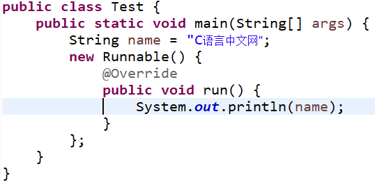
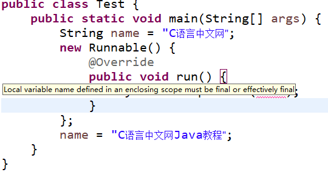

Java8新特性：Effectively final
Java 中局部内部类和匿名内部类访问的局部变量必须由 final 修饰，以保证内部类和外部类的数据一致性。但从 Java 8 开始，我们可以不加 final 修饰符，由系统默认添加，当然这在 Java 8 以前的版本是不允许的。Java 将这个功能称为 Effectively final 功能。
编写同样的代码，分别在 Java 7 和 Java 8 下运行，代码如下：

图 1
可以看到在 Java 7（图 1）中出现代码错误，提示我们必须显式的声明这个变量为 final 的（run 方法中代码为输出 name 语句，即
因为系统会默认添加 final 修饰符，所以在图 2 和图 3 中可以在匿名内部类中直接使用非 final 变量，而 final 修饰的局部变量不能在被重新赋值，所以图 3 中出现编译错误。也就是说从 Java 8 开始，它不要求程序员必须将访问的局部变量显式的声明为 final 的。只要该变量不被重新赋值就可以。
一个非 final 的局部变量或方法参数，其值在初始化后就从未更改，那么该变量就是 effectively final。在 Lambda 表达式中，使用局部变量的时候，也要求该变量必须是 final 的，所以 effectively final 在 Lambda 表达式上下文中非常有用。
Lambda 表达式在编程中是经常使用的，而匿名内部类是很少使用的。那么，我们在 Lambda 编程中每一个被使用到的局部变量都去显示定义成 final 吗？显然这不是一个好方法。所以，Java 8 引入了 effectively final 新概念。
总结一下，规则没有改变，Lambda 表达式和匿名内部类访问的局部变量必须是 final 的，只是不需要程序员显式的声明变量为 final 的，从而节省时间。
编写同样的代码，分别在 Java 7 和 Java 8 下运行，代码如下：
public class Test {
public static void main(String[] args) {
String name = "C语言中文网";
new Runnable() {
@Override
public void run() {
System.out.println(name);
}
}
}
}
图 1 是 Java 7 编译结果，图 2 和图 3 是 Java 8 编译结果。图 1
可以看到在 Java 7（图 1）中出现代码错误，提示我们必须显式的声明这个变量为 final 的（run 方法中代码为输出 name 语句，即
System.out.println(name);）。

图 2
图 2

图 3
图 3
因为系统会默认添加 final 修饰符，所以在图 2 和图 3 中可以在匿名内部类中直接使用非 final 变量，而 final 修饰的局部变量不能在被重新赋值，所以图 3 中出现编译错误。也就是说从 Java 8 开始，它不要求程序员必须将访问的局部变量显式的声明为 final 的。只要该变量不被重新赋值就可以。
一个非 final 的局部变量或方法参数，其值在初始化后就从未更改，那么该变量就是 effectively final。在 Lambda 表达式中，使用局部变量的时候，也要求该变量必须是 final 的，所以 effectively final 在 Lambda 表达式上下文中非常有用。
Lambda 表达式在编程中是经常使用的，而匿名内部类是很少使用的。那么，我们在 Lambda 编程中每一个被使用到的局部变量都去显示定义成 final 吗？显然这不是一个好方法。所以，Java 8 引入了 effectively final 新概念。
总结一下，规则没有改变，Lambda 表达式和匿名内部类访问的局部变量必须是 final 的，只是不需要程序员显式的声明变量为 final 的，从而节省时间。
关注公众号「站长严长生」，在手机上阅读所有教程，随时随地都能学习。内含一款搜索神器，免费下载全网书籍和视频。

微信扫码关注公众号